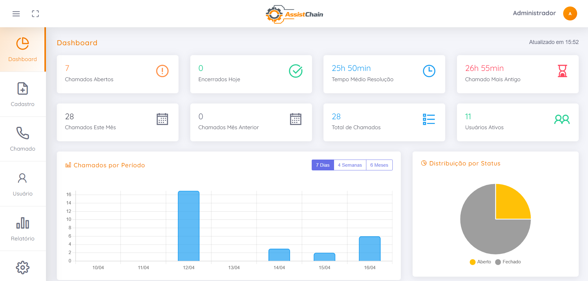

PLATAFORMA REAL
Veja o AssistChain em ação
Interface limpa, funcional e projetada para o dia a dia industrial.
Painel Andon ao vivo: cards de chamados com cronômetros, alertas visuais e carrossel automático para TVs industriais.
O sistema Andon definitivo. Controle em tempo real, escalonamento automático e relatórios precisos para operações que não podem parar.

Interface limpa, funcional e projetada para o dia a dia industrial.
Painel Andon ao vivo: cards de chamados com cronômetros, alertas visuais e carrossel automático para TVs industriais.
Um conjunto completo de ferramentas projetado para visibilidade total e resposta imediata.
Transforme qualquer TV em um centro de comando operacional. Identifique gargalos, acompanhe tempos de resposta e garanta que nenhuma máquina fique parada esperando suporte.

Um fluxo de trabalho projetado para simplicidade de implantação e robustez na operação.
Pare de perder dinheiro com máquinas paradas. Implante o AssistChain em horas, não semanas.